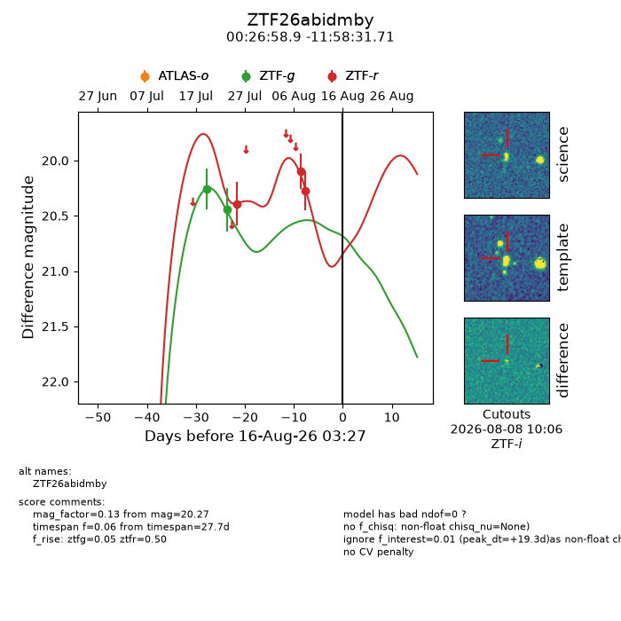
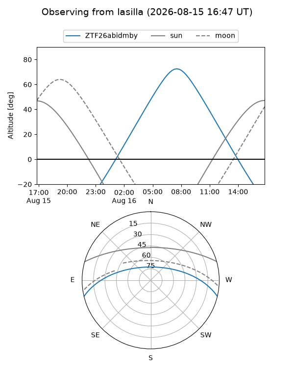
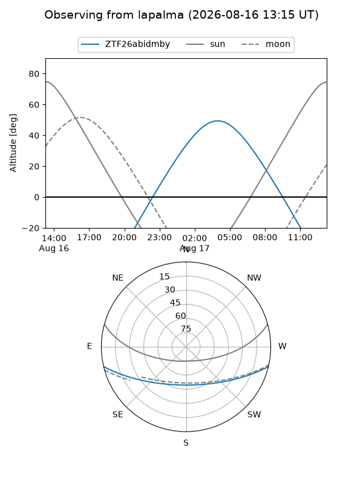
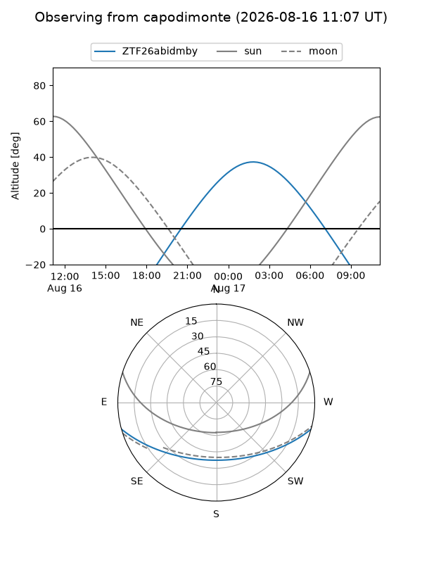
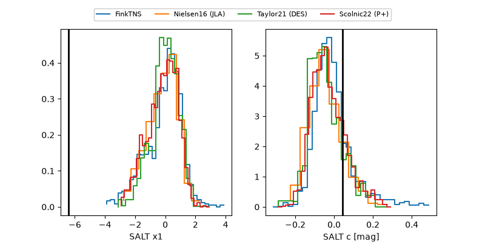

ZTF26abidmby
Target ZTF26abidmby at 2026-08-16 14:38
Aliases and brokers:
FINK-ZTF: ztf.fink-portal.org/ZTF26abidmby
Lasair-ZTF: lasair-ztf.lsst.ac.uk/objects/ZTF26abidmby
ALeRCE-ZTF: alerce.online/object/ZTF26abidmby
Direct TNS query: direct search
alt names
ZTF26abidmby (ztf,fink_ztf)
Coordinates:
equatorial (ra, dec) = 6.7455,-11.97547
equatorial (HMS+DMS) = 00:26:58.92,-11:58:31.71
galactic (l, b) = (101.0073,-73.79722)
Flags:
peak dt: +19.8
Photometry:
last ztfg=20.44, ztfr=20.27
2 ztfg, 3 ztfr detections
Lightcurve

Visibility



Additional plots
